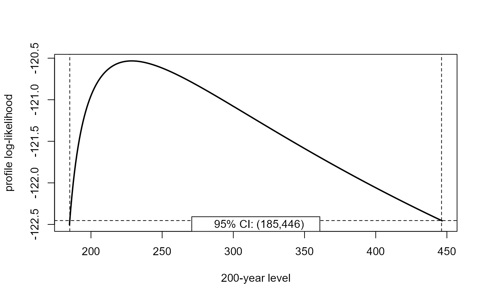
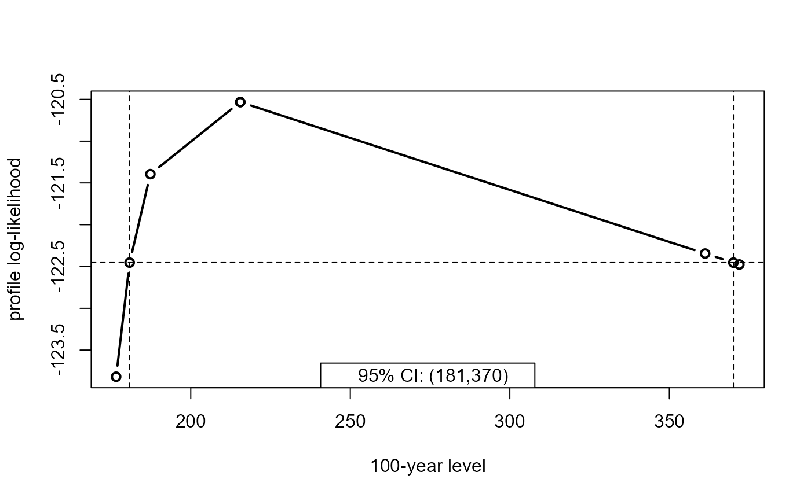
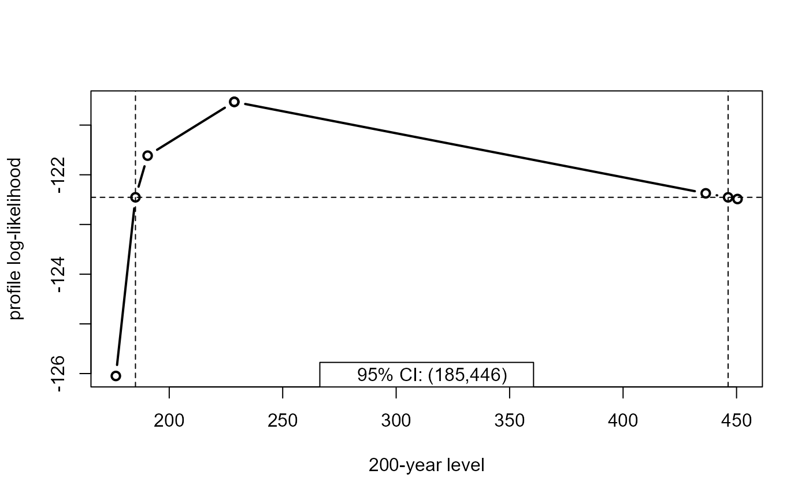

Calculates point estimates of \(m\)-year return levels for fitted model
objects returned from gev_mle.
Arguments
- x
An object inheriting from class
evmissingreturned fromgev_mle.- m
A numeric vector. Values of \(m\), the return periods of interest, in years.
- npy
A numeric scalar. The number \(n_{py}\) of block maxima per year. If the blocks are of length 1 year then
npy = 1.
Value
An object with class c("return_level", "numeric", "evmissing").
A numeric vector containing the MLEs of the required return levels, with
names indicating the return period. The fitted model object returned
from gev_mle is included as an attribute called "gev_mle".
The input arguments m and npy are also included as attributes as is
the call to gev_return.
Details
For \(\xi \neq 0\), the \(m\)-year return level is given by \(z_m = \mu + \sigma (y_p ^ {-\xi} - 1) / \xi\), where \(y_p = -\log(1 - p)\) and \(p = 1 - (1 - 1 / m) ^ {1 / n_{py}}\). For \(\xi = 0\), \(z_m = \mu - \sigma \log y_p\). Equivalently, we could note that \(z_m = \mu - \sigma BC(y_p, -\xi)\), where \(BC(x, \lambda)\) is a Box-Cox transformation.
References
Coles, S. G. (2001) An Introduction to Statistical Modeling of Extreme Values, Springer-Verlag, London. doi:10.1007/978-1-4471-3675-0_3
See also
return_level_methods for print, summary, coef, vcov and
confint methods.
Examples
## Simulate raw data from an exponential distribution
set.seed(13032025)
blocks <- 50
block_length <- 365
sdata <- sim_data(blocks = blocks, block_length = block_length)
# sdata$data_full have no missing values
# sdata$data_miss have had missing values created artificially
# Fit a GEV distribution to block maxima from the full data
fit1 <- gev_mle(sdata$data_full, block_length = sdata$block_length)
summary(fit1)
#>
#> Call:
#> gev_mle(data = sdata$data_full, block_length = sdata$block_length)
#>
#> Estimate Std. Error
#> mu 5.82700 0.1769
#> sigma 1.08400 0.1306
#> xi -0.01449 0.1243
# Make adjustment for the numbers of non-missing values per block
fit2 <- gev_mle(sdata$data_miss, block_length = sdata$block_length)
summary(fit2)
#>
#> Call:
#> gev_mle(data = sdata$data_miss, block_length = sdata$block_length)
#>
#> Estimate Std. Error
#> mu 5.97300 0.1907
#> sigma 1.07400 0.1157
#> xi -0.05945 0.1177
gev_return(fit1, m = c(100, 1000))
#> 100-year level 1000-year level
#> 10.65225 12.95378
gev_return(fit2, m = c(100, 1000))
#> 100-year level 1000-year level
#> 10.29673 12.05854
## Plymouth ozone data
fit <- gev_mle(PlymouthOzoneMaxima)
rl <- gev_return(fit, m = c(100, 200))
# Symmetric confidence intervals
sym <- confint(rl)
# Profile-based confidence intervals
prof <- confint(rl, profile = TRUE)
prof
#> 2.5% 97.5%
#> 100-year level 180.8432 370.0531
#> 200-year level 185.1193 446.2398
plot(prof, digits = 4)
plot(prof, parm = 2, digits = 3)

# Doing this more quickly when we only care about the confidence limits
prof <- confint(rl, profile = TRUE, mult = 32, faster = TRUE)
plot(prof, digits = 3, type = "b")

plot(prof, parm = 2, digits = 3, type = "b")
